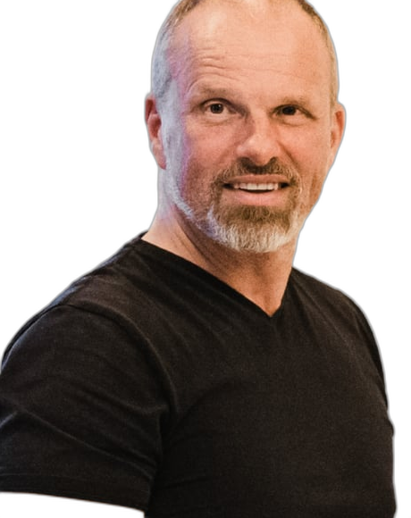

Beratung im Mittelstand
Dramatische Leistungssteigerung für produzierende Unternehmen
Höchstleistungskiller...
Schädliche Führung?
Viel zu viele Vorgaben?
Umständliches ERP?
Hinderliche Prozesse?
Viel umständliche Arbeit – und keine Automatisierung in Sicht?
Weg damit! Dann kommt auch der kleine Dienstweg, Engagement und Leistung wieder zum Vorschein.
Was unsere Kunden sagen
Zuerst dachte ich, es wäre das typische Beratergelaber, aber da steckt deutlich mehr dahinter. Danke.
Josef Reichinger
Betriebsleiter, FASCHANG Werkzeugbau GmbH
V&S hat uns mit an Brutalität grenzender Offenheit den Spiegel vorgehalten. Danke dafür.
Dr. Stefan Heun
Geschäftsführer, Schleifring GmbH
Berater, die Maschinenbau und Familienunternehmen wirklich verstehen, sind selten. Planung und Steuerung? Wir hatten keine Termintreue. Jetzt schon.
Jürgen Knoll
Geschäftsführer, KNOLL Maschinenbau GmbH
V&S hat uns durch finstere Zeiten begleitet. Wir sind gestärkt aus der Krise hervorgegangen.
Horst Leidner
Geschäftsführer, mimatic GmbH
Billig war er nicht. Aber dafür sehr gut. V&S hat uns Wege aufgezeigt, Innovationen schneller auf den Markt zu bringen.
Martina Barton
Geschäftsleitung, BBG GmbH & Co. KG
Alle Abteilungsleiter ziehen am selben Strang. Wir sind im Fluss. Planung und Führung fällt uns jetzt viel leichter.
Geschäftsführer
Mittelständischer Maschinenbauer
Beratung im Mittelstand
Ehrlich. Direkt. Wirksam.
Wettbewerbsfähigkeit braucht keine Kosmetik – sondern Wirkung: Schneller. Produktiver. Innovativer.
Kostendenken wird den typischen Mittelständler nicht retten. Höchstleistung schon.
Daher radikaler Fokus auf
Wettbewerbsfähigkeit statt Mittelmäßigkeit:
50%
das wird etwas ändern!
Lieferzeiten halbieren.
Ressourcen halbieren.
Innovationen verdoppeln.
Dafür muss der ganze unnötige, hinderliche Mist weg! Erst im Kopf. Dann in der Realität. Das ist hart – aber wirksam.
Schnelle Erprobung statt sauteure Konzepte
Echte Probleme lösen statt Methodik bis der Arzt kommt
Mehr Wirkung statt mehr Manntage
Drei Hebel für Höchstleistung
Organisation, Führung & Mensch
Einen Rahmen schaffen für Höchstleistungs-Entfaltung. Organisationen erzeugen Verhalten – nicht umgekehrt. Wir arbeiten am System. Da Führung das System jeden Tag wieder erzeugt, arbeiten wir an Führung.
Führung als Gestaltungs-Kompetenz.
Mehr erfahren →Lean – aber richtig
Ohne saugute Wertschöpfung ist alles andere nichts. Lean als gelebte Praxis – Fluss, Engpässe lösen, Verschwendung eliminieren.
Lean ohne Methodik – aber mit konkreter Wirkung.
Mehr erfahren →ERP & KI
Das ERP muss zum Rückenwind werden, nicht zum Hürdenlauf. KI bringt nur dann etwas, wenn Wertschöpfung, Innovation und Administration wirklich besser werden.
ERP als Leistungs-Bremse – oder Rückenwind?
Mehr erfahren →Warum die meisten Fabriken unter ihrem Potenzial bleiben
Das ERP hat Millionen gekostet – und trotzdem plant Dein Team (heimlich) in Excel. Prozesse sind höllen-umständlich und langsam. Digitalisierung bringt NICHTS. KI-Projekte versanden, weil alle sollen und müssen – aber niemand will.
Führungskräfte reden über Strategie und Transformation, aber die Organisation wehrt sich mit Händen und Füssen. Management und Mitarbeiter entfremden sich mehr und mehr.
Lean war mal ein Projekt. Jetzt stauben die Boards ein. Die Wertschöpfung wird immer unproduktiver und die Verwaltung wird größer – aber nichts wird wirklich besser.
Und Strategie? Ja – haben viele. Folien. Aber wirksam? Nützlich? Energie und Ärmel zurück und ran? Fehlanzeige...
Und weil das alles nicht funktioniert, brauchen wir ein professionelles Projektmanagement. Aber auch das nervt und nützt nichts. Projekte versanden. Die Themen sind energie- und auch nutzlos.
Viel Beschäftigung. Wenig Wirkung.
Wir haben uns in Deutschland „kaputt-professionalisiert". Das ist tragisch und muss sich ändern.
Denn: So wird das nix...
Was kann man fundamental anders machen?
(kommt bald)
Unsere Arbeitsweise
Wir glauben nicht, dass es an den Menschen liegt. Manchmal an Einzelnen – klar. Das weiß ja auch jeder. Nur niemand hat den Arsch in der Hose, sie zu entfernen oder vernünftig auszubilden. Die eigentliche Hürde für mehr Leistung sind andere: Führung ist verwaist. Hierarchien, Strukturen, Rollen und die Art, wie Entscheidungen getroffen werden, passen nicht zu der Arbeit, die gemacht werden muss, und zu den Problemen, die jeden Tag gelöst werden müssen.
Organisationen erzeugen Verhalten – nicht umgekehrt.
Deshalb arbeiten wir an drei Baustellen gleichzeitig:
- – das Denken von Management.
- – die täglichen Praktiken von Management und Führung.
- – die Wertschöpfung und Innovation – denn dort spielt die Musik.
Florian Glöbl
Geschäftsführer, Berater & Vernetzer
Über 15 Jahre im mittelständischen Sondermaschinenbau. Wertschöpfung verstehen, Orientierung geben, Bewegung ermöglichen.

Benno Löffler
Gesellschafter & Systempraktiker
Über 25 Jahre Beratung. Autor von „Saugute Zusammenarbeit". Sieht Strukturen, wo andere Verhalten erklären.
Simone Heigl
Trainerin, Beraterin & Coach für Kommunikation und Führung
Kommunikation als mächtigste Lebenskompetenz. Resilienz, Klartext, Konfliktmanagement – authentisch und individuell.
David Weber
Lean-Berater & Wertschöpfungsexperte
Lean als gelebte Praxis. Fluss erzeugen, Engpässe lösen, Verschwendung eliminieren – direkt in der Wertschöpfung.
Veranstaltungen
Jeden Freitag, 16:00–17:00
Sch(B)rechstunde
Aufbrechen oder Abkotzen?
Offener Austausch zu Höchstleistungskillern: ERP und KI. Direkt, ungeschminkt, kostenlos. Keine Agenda, keine Slides – nur echte Fragen und hoffentlich nützliche Antworten.
3-Tages-Event in den Bergen
Leistung am Limit
Führung radikal neu denken.
Transformation, Höchstleistung und Resilienz für Führungskräfte. Mit Extrembergsteigern, Impulsen und echten Fällen aus der Praxis.
Ausbildung in 3 Blöcken
SystemGestalter
Wirksame Transformation lernen.
Lean, Agile, TOC und Systemtheorie – praxisnah kombiniert. Für HR, OE, Berater und Führungskräfte, die systemischer denken wollen.
Was macht HR NICHT?
HR versucht nicht, Leute zu erziehen. HR arbeitet nicht an der Kultur. HR ist nicht verantwortlich dafür, dass es Menschen gut geht. HR unterlässt Übergriffigkeit. HR hilft wenn danach gefragt wird. HR dient.
Whitepaper ↓ (kommt bald)Höchstleistung
als Unterlassungs-Leistung.
Die meisten Höchstleistungs-Organisationen machen viel Wertschöpfung und wenig Beiwerk. Viel Vertrauensvorsprung spart aufwendige Kontrollmechanismen. Wenig Overhead. Wenige Führungskräfte – weil andere auch Führungsarbeit machen. Kein PMO – weil Leute Sachen machen. Einfach so.
Whitepaper ↓ (kommt bald)Schnelle Erprobung
statt Riesenprojekte.
Höchstleister reden immer konkret. Jede Idee kann gut sein oder scheitern. Sie reden von Erprobung. Sie beobachten, was klappt und was nicht. Sie lachen, wenn sie sich geirrt haben. Und fangen nochmal von vorne an. Würdevoll scheitern. Hartnäckig bleiben.
Whitepaper ↓ (kommt bald)Bereit für Höchstleistung?
Ein Gespräch. Du erzählst. Wir stellen Fragen. Du denkst nach.
Und wenn Du dann nochmal sprechen willst, hat das Gespräch offenbar etwas bewirkt...